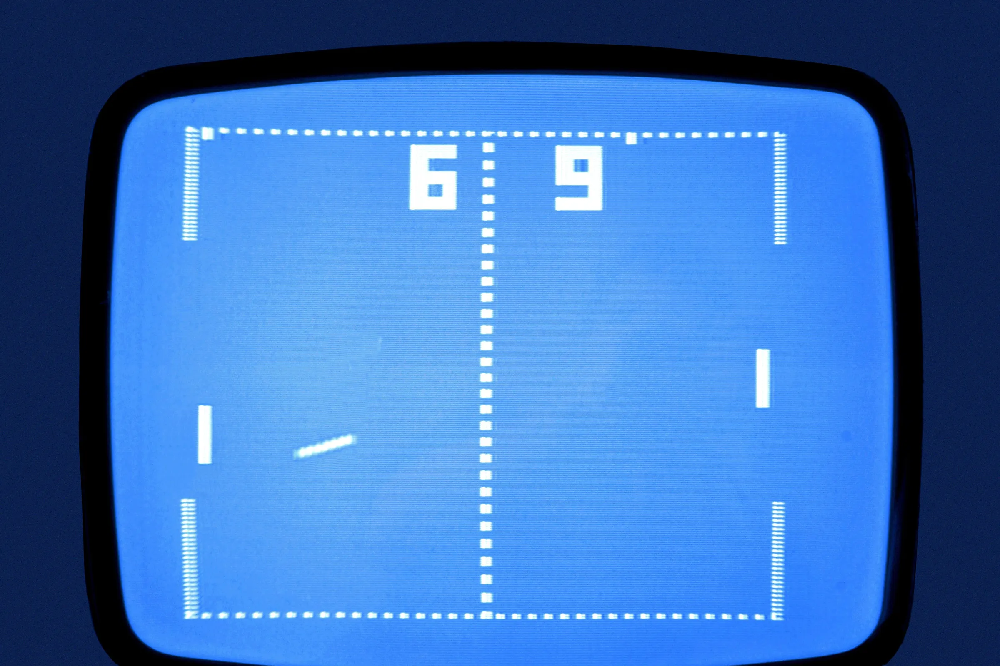
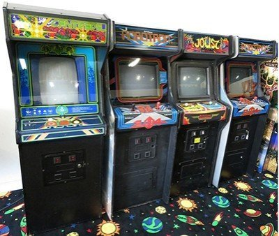
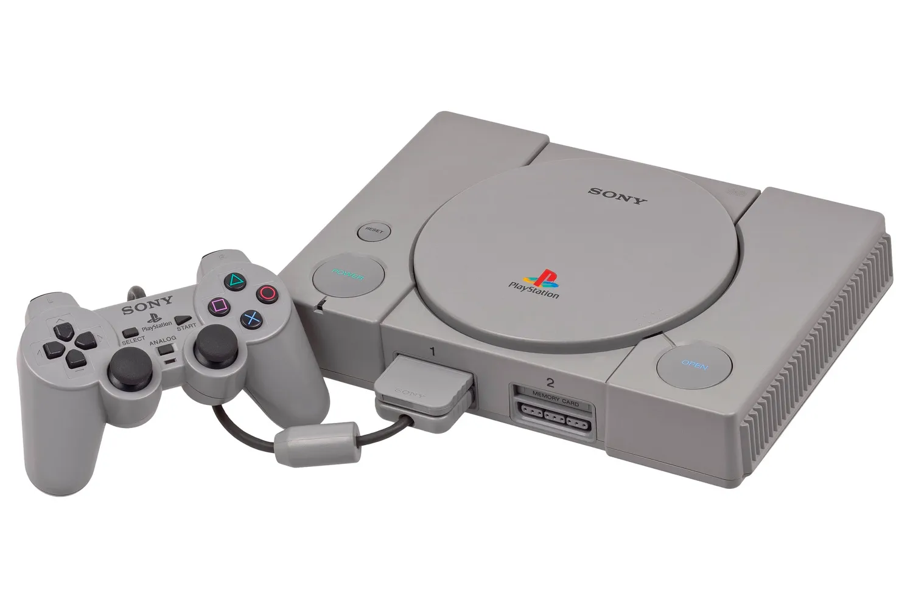

Odwiedzin: 0
Czas na stronie: 00:00:00
Historia gier komputerowych
Lata 70.
Początki gier - "Pong" od Atari, pierwsze automaty arcade i konsole domowe.


Lata 80.
Złota era automatów, powstanie NES-a, rozwój rynku gier domowych.


Lata 90.
3D w grach, PlayStation, rewolucja PC, kultowe tytuły jak Doom i Quake.
